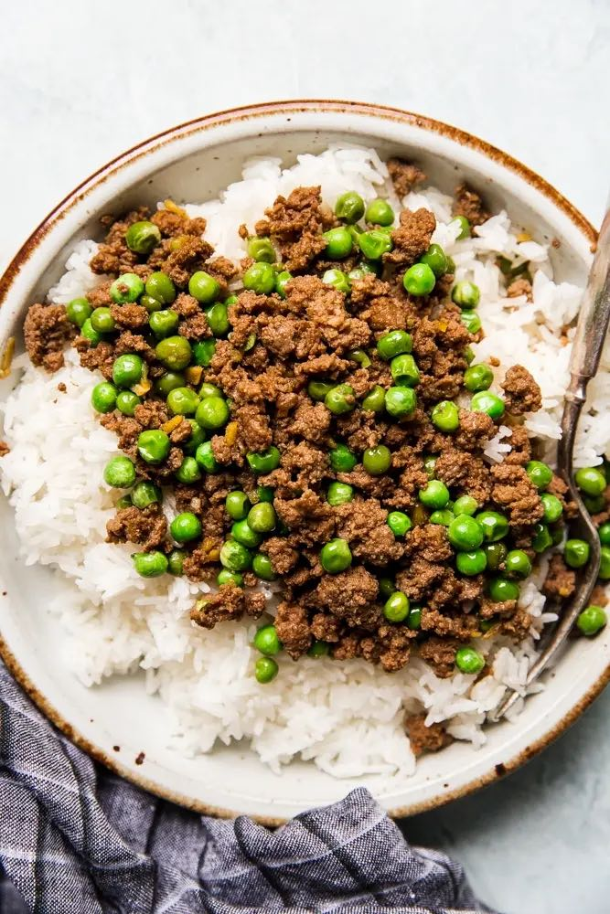

Ginger, Beef, and Rice (Soboro Donburi) Recipe

Soboro Donburi in Just 5 Ingredients
We didn’t make any changes to traditional Japanese soboro beef recipe, it really is just as simple as five ingredients. Well, plus the rice the soboro beef is served over, which is what makes it soboro donburi (remember, that means rice bowl). The word “soboro” refers to the fact that we’re using ground beef, and to the crumbly texture of the finished dish.
Ingredients
- 1 lb ground beef
- .33 cup of soy sauce
- .25 cup of water
- 1 Tbs of sugar
- 1 Tbs of fresh ginger, minced
- 1 cup of frozen peas
Steps
- In a large skillet, combine ground beef, soy sauce, water and sugar. Cook over medium heat until the beef is browned.
- Add fresh ginger and frozen peas. Continue to cook until most of the liquid is evaporated.
- Serve over cooked rice.
- You can also garnish with green onion or sesame seeds if desired.